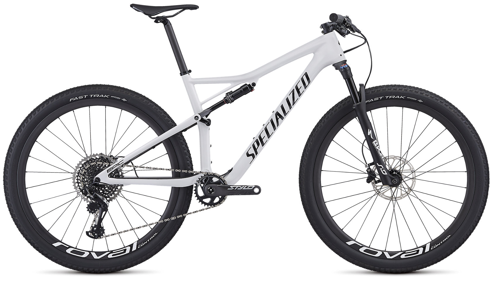
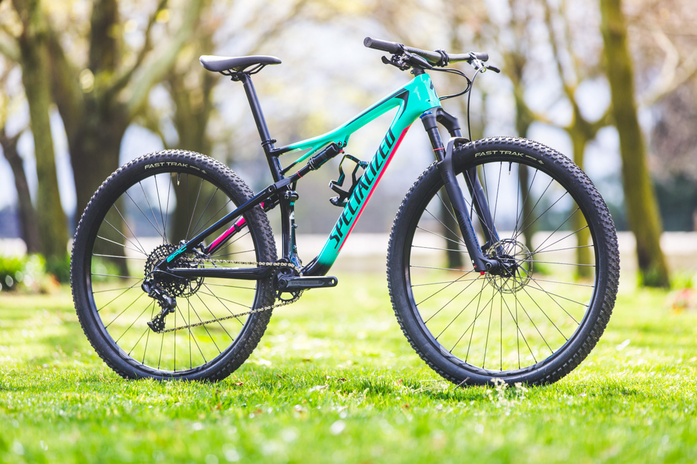

When only the best will do, there's nothing faster than our S-Works Epic. But when you need a race-ready steed that leaves you a bit of change leftover to put towards racing every weekend this season, the Epic Pro steals the show.
Full fact 11m carbon fiber frame combines stiffness, strength, and light overall weight to deliver an off-the-hook race bike. Meanwhile, the new geometry, RockShox Brain shock, and 100mm of travel, make the Epic the best handling, fastest XC rig you've been on.
Race courses have evolved over the past few years. They're more technical, steeper, and simply more challenging to ride. Specialized saw this as an opportunity to make something special—something that both World Cup athletes and XC riders alike can instantly feel the benefit from. They looked at the sum of parts that make a bike handle well, like the head angle, reach, stack, chainstay length, fork offset, etc., and reevaluated all of it. Increasing the reach made a bike that was more stable at speed and generally more comfortable to ride. Dropper posts? Yep, those fit, and not just a short- travel XC option, but full-length droppers that fit in the 30.9mm seat tube. Head angle? That's been slacked that out, but not without evaluating the overall handling package. It now lands on a custom offset, 42mm fork that works with the slacker head angle in order to behave itself in tight corners and through switchbacks.
